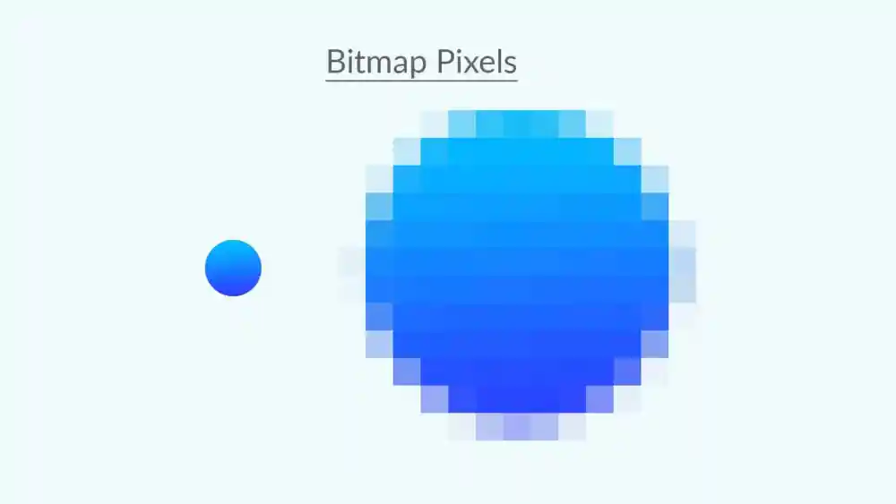
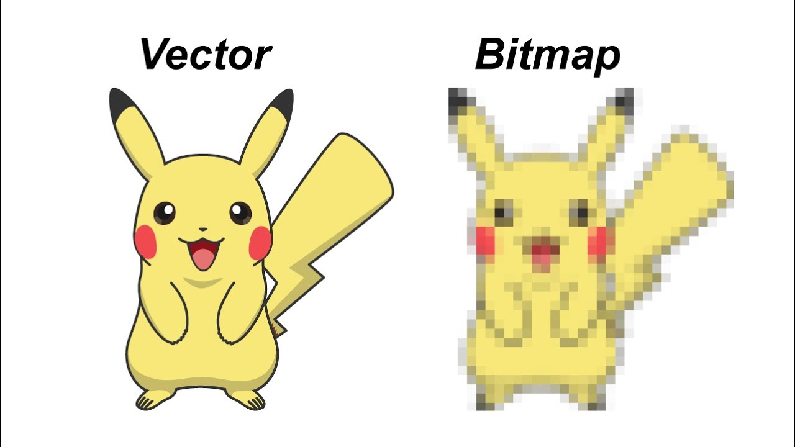

Wat zijn Bitmap en vectorafbeeldingen?
Hoe worden afbeeldingen opgeslagen? Een afbeelding bestaat uit kleine blokjes genaamd pixels. Elke pixel heeft een kleur, wat betekent dat een afbeelding uit veel verschillende kleuren bestaat. Hoe meer pixels er in een afbeelding zijn, hoe scherper de afbeelding eruitziet. Een afbeelding die uit pixels is opgebouwd, noem je een bitmapafbeelding. Voorbeelden van bitmapafbeeldingen zijn GIF, PNG en JPEG. Bitmapafbeeldingen hebben twee nadelen. Ten eerste nemen ze veel ruimte op je computer in. Ten tweede, als je inzoomt op een bitmapafbeelding, zie je de afzonderlijke pixels, waardoor de afbeelding onscherp wordt. Om te zorgen dat de afbeelding niet onscherp is bij inzoomen, heb je veel pixels nodig, maar dat kost weer veel opslagruimte.
Vectorafbeeldingen
Een andere manier om afbeeldingen op te slaan, is met vormen in plaats van pixels. Zo’n afbeelding noemen we een vectorafbeelding. Als je de grootte van een vectorafbeelding verandert, wordt alleen de opgeslagen grootte aangepast en wordt de vorm opnieuw getekend. Hierdoor blijft een vectorafbeelding scherp, in tegenstelling tot een bitmapafbeelding. Een voorbeeld van een vectorafbeelding is SVG. Vectorafbeeldingen hebben ook nadelen. Ze zijn niet geschikt voor moeilijke afbeeldingen, zoals foto's, omdat die veel verschillende kleuren hebben. Met vectorafbeeldingen kun je alleen vormen vastleggen, dus digitale foto's kunnen niet als vectorafbeeldingen worden opgeslagen.
Hoe sla je geluid op?
In een computer kunnen letters, kleuren en afbeeldingen worden opgeslagen. Maar je kunt ook geluid opslaan op een computer. Geluid is het resultaat van trillingen in de lucht. Deze trillingen worden opgevangen door een microfoon, die ze omzet in een elektrisch signaal dat naar de computer gaat. In de computer worden deze trillingen omgezet in code. Dit noemen we samplen. Tijdens het samplen wordt de geluidssterkte elke seconde gemeten. Je kunt hiervan een grafiek maken, met de geluidssterkte op de verticale as en de tijd op de horizontale as. De punten op de grafiek worden samples genoemd, en deze kunnen in binaire code worden opgeslagen. Het aantal samples per seconde wordt de sample rate genoemd. Hoe meer samples je hebt, hoe beter de geluidskwaliteit zal zijn.
Druk op de afbeelding voor extra uitleg